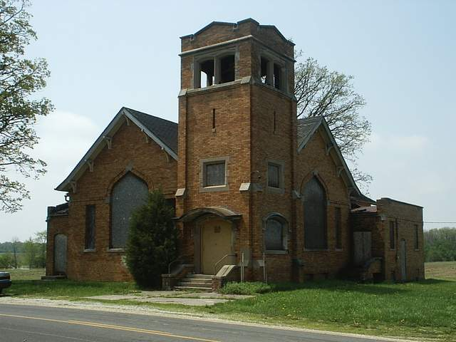

Tomlinson Cemetery
A haunted cemetery exists at the corner of Mendon Road and the highly self-explanatory Mercer Van Wert County Line Road. This haunting functions very mechanically; if one person stands at the center, and another walks backwards around the cemetery, the person inside will disappear. This has to be an easy one to disprove, but hey, it's still interesting.

Across the street from this cemetery is a pile of bricks and scorched wood which is all that remains of Wesley Chapel, built in 1912 by the Tomlinsons. During the long period that it stood vacant and shuttered, the legend spread that you could see hell through one of its windows. The crawlspace beneath the front steps (visible in the photo above, obviously taken after it was abandoned but before it burned) was where many spooky and mysterious knocks, voices, and other sounds seemed to originate. As I said, if you go there today, you can still explore the cemetery, but the church burned flat. The origin of the fire, incidentally, is still unknown.
Back